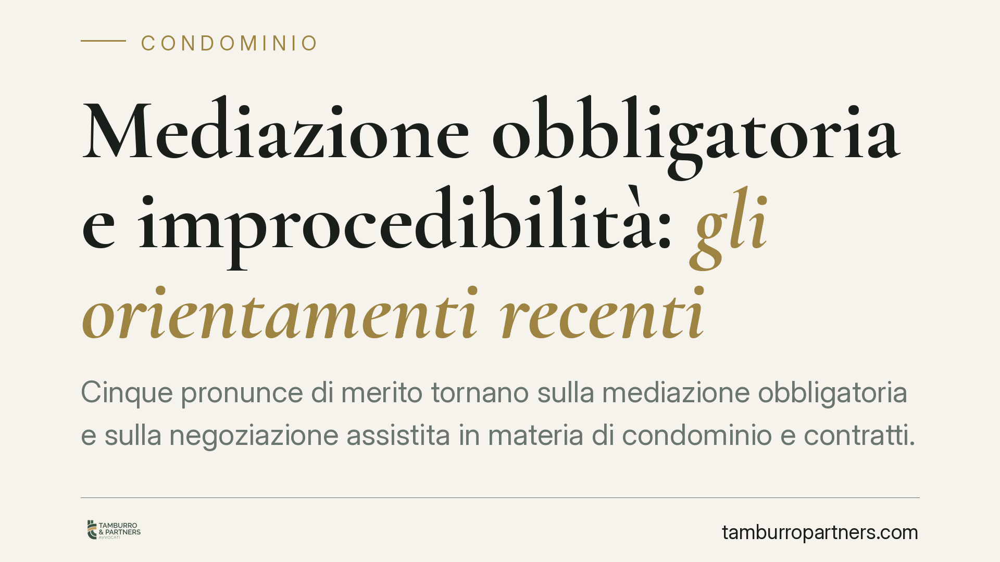

Mediazione obbligatoria e improcedibilità: gli orientamenti recenti
Cinque pronunce di merito tornano sulla mediazione obbligatoria e sulla negoziazione assistita in materia di condominio e contratti. I giudici chiariscono cosa accade quando si sbaglia strumento, come decorre il termine per impugnare le delibere e quando la mediazione telematica è valida. Temi che decidono se una causa può proseguire o si arresta sul nascere.

Il quadro: mediazione obbligatoria e improcedibilità
La mediazione obbligatoria è la condizione di procedibilità prevista dall'art. 5 del D.lgs. 28/2010 per una serie di materie, tra cui il condominio e molti contratti. "Condizione di procedibilità" significa che, se la mediazione non viene tentata prima di iniziare la causa, il giudice non può decidere nel merito: dichiara la domanda improcedibile.
Un avvertimento di metodo. La disciplina della mediazione è stata riscritta dalla riforma Cartabia (D.lgs. 149/2022), che ha ridisegnato l'art. 5 D.lgs. 28/2010, ha confermato il condominio tra le materie a mediazione obbligatoria e ha introdotto un regime dedicato per le spese (artt. 5-quater e seguenti). I riferimenti che seguono vanno letti nella versione oggi vigente. Le pronunce citate sono orientamenti di merito, non consolidati né sempre verificabili nel testo integrale: vanno prese come indicazioni di tendenza, non come diritto certo.
Strumento sbagliato, ma condizione comunque assolta
Mediazione obbligatoria e negoziazione assistita (art. 3 D.l. 132/2014) hanno perimetri diversi. La prima passa da un organismo terzo; la seconda è una trattativa condotta dagli avvocati delle parti. Non sono intercambiabili.
Un primo orientamento affronta il caso di chi attiva la negoziazione assistita dove serviva la mediazione, o viceversa. La conclusione: chi ha comunque esperito la mediazione non perde la causa per aver formalmente sbagliato inquadramento. Ciò che conta è che il tentativo previsto dalla legge sia stato realmente compiuto. L'improcedibilità sanziona l'omissione, non l'errore di etichetta quando la sostanza è rispettata.
### Il termine per impugnare le delibere condominiali
Il punto più delicato riguarda l'art. 1137 c.c., che fissa in trenta giorni il termine per impugnare le delibere assembleari. È un termine di decadenza: scaduto, il diritto di impugnare si perde.
Qui interviene il meccanismo dell'art. 5, comma 6, D.lgs. 28/2010, che va compreso nel suo doppio effetto. La comunicazione alle altre parti della domanda di mediazione impedisce la decadenza per una sola volta: entro i trenta giorni il condomino deve attivare la mediazione, e questa attivazione "blocca" la decadenza. Ma non finisce qui. La stessa norma prevede che, dal momento della comunicazione, il termine resti sospeso. Il decorso riprende quando la mediazione si chiude: dal deposito del verbale, oppure dallo spirare dei tre mesi di durata massima del procedimento.
In pratica: l'impugnazione va introdotta entro trenta giorni; l'attivazione della mediazione impedisce la decadenza e sospende il termine; alla chiusura della mediazione il termine riprende a decorrere per la parte residua. Non è, quindi, un semplice "blocco" definitivo, ma un impedimento seguito da sospensione con successiva ripresa.
### La rimborsabilità dei costi della negoziazione
Un ulteriore orientamento riconosce che i costi sostenuti per la negoziazione assistita possano rientrare tra le spese rimborsabili in favore della parte vittoriosa. È una lettura coerente con la funzione della negoziazione: attività necessaria e non facoltativa, il cui costo non deve gravare su chi ha ragione.
### La mediazione telematica
Infine, viene confermata la piena validità della mediazione svolta in modalità telematica. La partecipazione a distanza, se garantisce l'effettivo confronto tra le parti, soddisfa la condizione di procedibilità al pari dell'incontro in presenza. Un dato importante per la gestione operativa dei procedimenti, soprattutto in ambito condominiale.
Cosa cambia per condomini, amministratori e parti contrattuali
Per chi deve impugnare una delibera o agire in una controversia contrattuale, questi orientamenti riducono alcuni rischi ma non eliminano la sostanza: il tentativo obbligatorio va comunque fatto, e va fatto nei tempi. L'errore da evitare non è tanto scegliere lo strumento sbagliato, quanto non attivare alcun tentativo o attivarlo fuori termine.
Cosa fare in concreto
- Verifica la materia prima di agire: stabilisci se serve mediazione obbligatoria o negoziazione assistita, ma nel dubbio attiva comunque il tentativo previsto dalla legge.
- Per le delibere condominiali, muoviti entro i trenta giorni: attiva la mediazione e comunica la domanda alle altre parti prima della scadenza dell'art. 1137 c.c.
- Calcola la ripresa del termine: monitora la chiusura della mediazione (verbale o scadenza dei tre mesi) per non lasciar decorrere la parte residua di termine.
- Conserva la documentazione dei costi della negoziazione, in vista di un'eventuale richiesta di rimborso.
- Formalizza correttamente la mediazione telematica, curando verbali e prova della effettiva partecipazione.
Disclaimer
Contributo informativo a cura di Tamburro & Partners - Avv. Giuseppe Tamburro. Non costituisce parere legale.
Ogni condominio ha una storia a sé.
Se gestisci un'amministrazione e vuoi un confronto su una specifica questione condominiale, scrivi allo studio. Ti rispondiamo entro un giorno lavorativo.